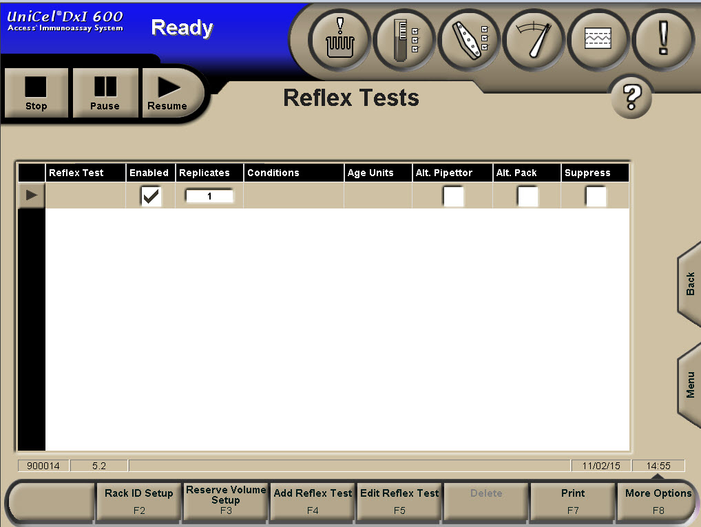
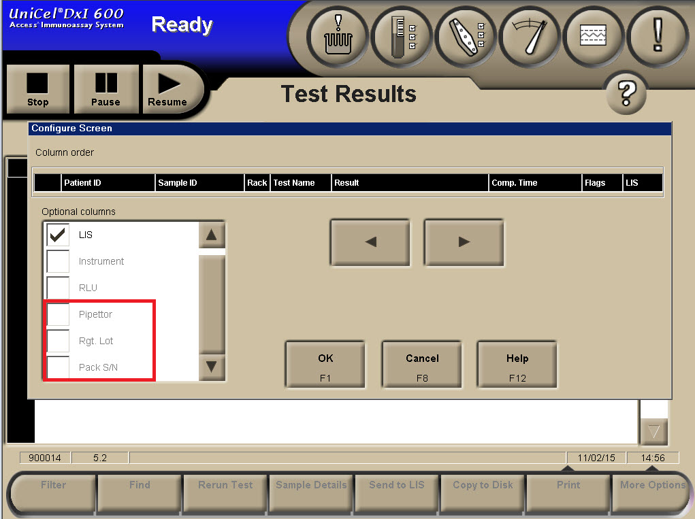

Software V5.2 Release Notes
Purpose
- This document provides details of the most significant features and enhancements in DxI software v5.2.
Confidentiality
- Software release notes are confidential and should not be shared with customers.
Background
- This information relates to v5.2 software only:
- v5.2 software was cut in to manufacturing and sales groups only.
- There will be no general distribution.
Related Mods
- As there was no general distribution, there will be no mod to track install completion.
Feature Overview
- Enhanced Reflex test feature - Added the option (in the reflex setup screen) to reflex using an alternative pipettor/reagent pack than the initial test.
- CIA Service 2 - RMS connectivity enhancements.
- VNC application - Replaces pcAnywhere for remote desktop connection. The VNC Viewer program is needed to remote desktop to a DxI system with v5.2 installed.
- Wash buffer pressure sensor support - software readiness to support the new wash buffer sensor hardware (hardware is expected in late 2015).
Enhanced Reflex
| Topic | Screen Shot |
|---|---|
| Option to reflex using a an alternative pipettor/reagent pack than the initial test. |
 |
| Option to configure the Test Results screen, to see pipettor and pack information. |
 |
VNC application
- VNC replaces pcAnywhere for RDS connections.
- PROService will auto select the program (pcAnywhere or VNC) needed to RDS, based on the system being connected to.
- VNC Viewer for Windows XP or Windows 7 can be downloaded as needed atPC Deploy
Expected Behavior
| Topic | Behavior |
|---|---|
| Performance Macro v2.0 | Due to additional information being captured (pipettor and pack information) in the Copy to Disk data, the Performance Macro may not process data correctly. Chaska Technical Support are working to update the Macro, however while the Macro is being updated columns (Rgt. Lot and Pack S/N) can be removed prior to processing the data. |
| Volume Checks, Sample Pipettor | Running the Sample Pipettor Volume Check will cause the AU Object to crash. After starting the Volume Check, the test will initially appear to start running normally but will fail soon after. To recover, the user will be required to relaunch the AU Object. In addition, a reinitialize routine (sample wheel all positions) is required to remove vessels that were placed in the sample wheel at the beginning of the Volume Checks. There is no workaround. Field Service should not use the Sample Pipettor Volume Checks. This issue will be corrected in the next version of system software. |